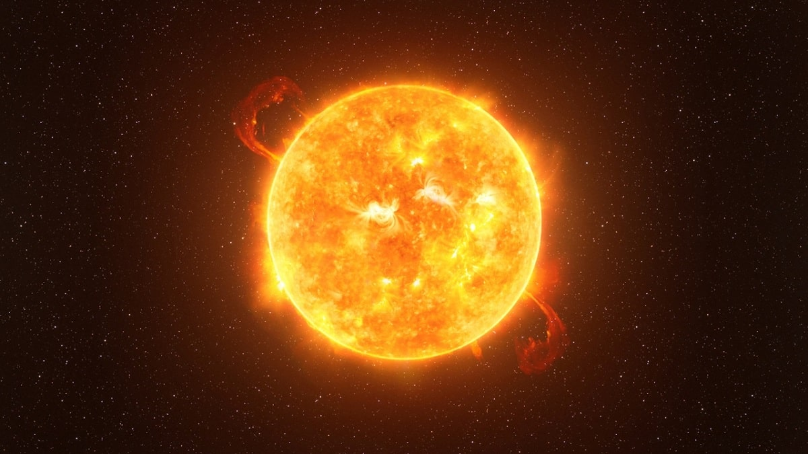

Światło • energia • fotony
Energia światła
Od promieni Słońca po pojedynczy foton — światło przenosi energię, która napędza zjawiska wokół nas.
Odkryj, jak działa
01 / Podstawy
Energia zamknięta w fotonie
Światło przenosi energię w postaci fal elektromagnetycznych. Można je również opisywać jako strumień fotonów — cząstek, z których każda niesie określoną porcję energii.
Energia fotonu zależy od częstotliwości światła: im większa częstotliwość, tym większa energia. Dlatego promieniowanie ultrafioletowe ma bardziej energetyczne fotony niż światło widzialne.
E = h · f E — energia, h — stała Plancka, f — częstotliwość
02 / W praktyce
Światło, które pracuje
- 01Energia elektryczna
Panele słoneczne zamieniają światło na prąd. - 02Życie roślin
Fotosynteza wykorzystuje energię światła do wzrostu. - 03Precyzyjne narzędzia
Skupione światło laserowe znajduje zastosowanie między innymi w medycynie.
03 / Porównanie
Różne fale, różna energia
| Rodzaj promieniowania | Długość fali | Energia fotonu |
|---|---|---|
| Podczerwień | Powyżej 750 nm | Niższa |
| Światło widzialne | Około 380–750 nm | Pośrednia |
| Nadfiolet | Poniżej 380 nm | Wyższa |